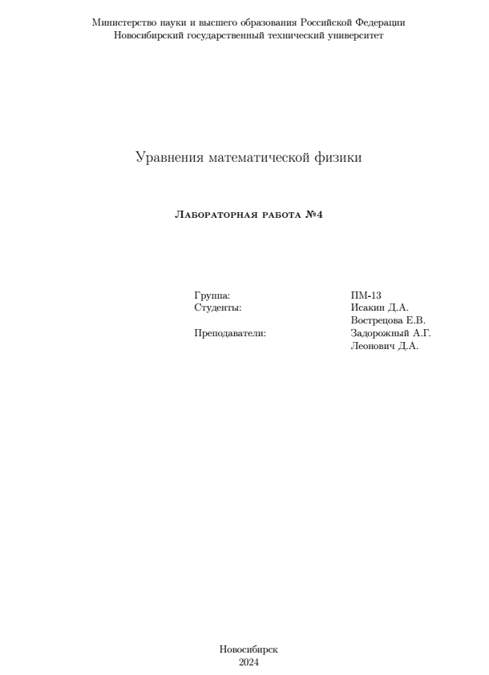

1. Цель работы
Изучить особенности реализации итерационных методов BCG, BCGSTAB, GMRES для СЛАУ с несимметричными разреженными матрицами. Исследовать влияние предобуславливания на сходимость этих методов.2. Задание
-
Реализовать программу решения СЛАУ большой размерности в разреженном строчно-столбцовом формате в соответствии с заданием.
-
Протестировать разработанную программу на небольших матрицах.
-
Сравнить реализованный метод по вычисдительным затратам с методами используемыми в предыдущей лабораторной работе, на матрицах большой размерности, полученных в результате конечноэлементной аппроксимации в предыдущей работе.
Вариант №6: Реализовать решение СЛАУ методом BSG с LU-предобуславливанием.
3. Анализ
Реализовать схему метода BCG и BCG с LU факторизацией. Сами рекуриентные формулы:BCG

BCG с факторизацией

4. Верификация
Здесь
Сравнительная таблица
Для итерационных методов:
| Метод | k | Time ms | ||
|---|---|---|---|---|
| LOS | 191 | 0 | 9.7601e-14 | 3.49574e-12 |
| LOS + LU | 35 | 0 | 9.01077e-14 | 2.93044e-12 |
| BCG | 14 | 0 | 2.96954e-14 | 6.23966e-13 |
| BCG + LU | 10 | 0 | 4.12692e-16 | 2.15571e-15 |
| LU | 1 | 0 | 2.42418e-16 | 5.418e-16 |
5. Тесты на МКЭ матрицах
Протестируем методы для матриц полученных при МКЭ аппроксимации гармонической задачи.
Фиксированные параметры задачи:
Размерность матрицы
Тест №1
| Метод | k | Time ms | ||
|---|---|---|---|---|
| LOS | 2500 | 1654 | 9.54997e-10 | 0.69107 |
| LOS + LU | 3 | 7 | 5.53854e-12 | 2.32965e-11 |
| BCG | 762 | 603 | 4.95704e-11 | 5.87621e-08 |
| BCG + LU | 3 | 7 | 1.22842e-11 | 3.9185e-11 |
| LU | 1 | 14785 | 1.26487e-11 | 3.85027e-11 |
Тест №2
| Метод | k | Time ms | ||
|---|---|---|---|---|
| LOS | 2500 | 1736 | 9.13684e-10 | 0.69107 |
| LOS + LU | 3 | 6 | 5.45721e-11 | 2.29817e-10 |
| BCG | 836 | 801 | 9.31657e-11 | 2.00104e-05 |
| BCG + LU | 6 | 13 | 5.00149e-08 | 1.63441e-07 |
| LU | 1 | 15281 | 1.23209e-10 | 3.48988e-10 |
Тест №3
| Метод | k | Time ms | ||
|---|---|---|---|---|
| LOS | 2500 | 1654 | 6.68491e-10 | 0.69107 |
| LOS + LU | 2500 | 2859 | -nan | -nan |
| BCG | 343 | 327 | 4.78608e-11 | 0.69107 |
| BCG + LU | 6 | 14 | 4.18712e-07 | 1.30377e-06 |
| LU | 1 | 15353 | 1.20296e-09 | 3.5393e-09 |
Тест №4
| Метод | k | Time ms | ||
|---|---|---|---|---|
| LOS | 2500 | 1769 | 0.154913 | 0.940253 |
| LOS + LU | 40 | 44 | 5.58473e-09 | 2.33157e-08 |
| BCG | 407 | 383 | 8.87048e-11 | 0.69107 |
| BCG + LU | 6 | 16 | 3.02283e-06 | 1.00063e-05 |
| LU | 1 | 14054 | 1.19611e-08 | 3.61215e-08 |
Вывод:
Из приведенных тестов видно, что
- Если LOS сходится, то схемы методов BCG сходятся быстрее
- При использовании факторизации сходимость может быть быстрее, однако точность получаемого решения может сильно падать (Тест №4).
- Самым устойчывым, но в то же время затратным оказалсяс прямой метод LU однако для задач высокой размерности данный метод не применим из за слишком больших затрат по памяти и время решения будет так же крайне большим.
- Так как итерационные методы решения СЛАУ основаны на методах минимизации функционалов, может возникнуть ситуация, когда метод зашел в минимум на первых итерациях, но при этом невязка не упала достаточно сильно для выхода из итерационного процесса. Важно отслеживать этот момент и допустим брать полученный лучший вектор приближения немного его смещать и запускать итерационный процесс снова, таким образом можно выйти из локального минимума и найти лучшее решения или хотя бы не потерать найденное решения доставлающее функционалу локальный минимум
6. Исходный код
main.cpp
#include <iostream>
#include "Matrix.h"
#include "SlauSolver.h"
#include "SLAU.h"
#include <chrono>
void SaveVec(const std::string &filename, int32_t precession)
{
}
int main()
{
/* Истенный вектор x */
double x[4394];
double e = -1;
for(int i = 0; i < 4394; i++)
{
if(i % 25 == 0)
e += 1.0;
x[i] = e;
}
double x_true_norm = SLAUSolvers::IterationSolvers::Norma(x, 4394);
SLAUSolvers::IterationSolvers::InitDateFile InitStruct;
InitStruct.type = SLAUSolvers::MatrixType::SPARSE;
InitStruct.di = "Test4/di.txt";
InitStruct.ig = "Test4/ig.txt";
InitStruct.jg = "Test4/jg.txt";
InitStruct.ggl = "Test4/ggl.txt";
InitStruct.ggu = "Test4/ggu.txt";
InitStruct.kuslau = "Test4/kuslau.txt";
InitStruct.f = "Test4/f.txt";
SLAUSolvers::IterationSolvers::SLAU slau;
SLAUSolvers::IterationSolvers::Load(InitStruct, slau, true);
SLAUSolvers::IterationSolvers::MultA(slau.matrix, x, slau.f);
SLAUSolvers::IterationSolvers::SetSolveMode(slau, SLAUSolvers::IterationSolvers::Solvemode::BCG_NOSYMETRIC_LU_FACT);
//auto begin = std::chrono::steady_clock::now();
SLAUSolvers::IterationSolvers::SolveSLAU(slau, true);
// auto end = std::chrono::steady_clock::now();
// auto elapsed_ms = std::chrono::duration_cast<std::chrono::milliseconds>(end - begin);
SLAUSolvers::IterationSolvers::SaveX(slau, "Test2/x.txt", "\n");
// SLAUSolvers::IterationSolvers::ActionVec(1.0, x, -1.0, slau.x, x, slau.N);
// double r = SLAUSolvers::IterationSolvers::Norma(x, slau.N)/x_true_norm;
/* Преобразуем внутренний формат матрицы решателя SLAU в формат для конвертации */
Matrix::SparseMatrix SparseMatrix(slau.N, slau.size);
int N = slau.N;
int size = slau.size;
std::copy(slau.matrix.di, slau.matrix.di + N, SparseMatrix.di.begin());
std::copy(slau.matrix.ggl, slau.matrix.ggl + size, SparseMatrix.ggl.begin());
std::copy(slau.matrix.ggu,slau.matrix.ggu + size, SparseMatrix.ggu.begin() );
std::copy(slau.matrix.ig,slau.matrix.ig + N+1, SparseMatrix.ig.begin() );
std::copy(slau.matrix.jg,slau.matrix.jg + size, SparseMatrix.jg.begin() );
SparseMatrix.PrintDenseMatrix("Sparse.txt");
// Конвертим в Профильный формат
SLAU_ProfileMatrix LUSolver;
Matrix::SparseMatrix2ProfileMatrix(SparseMatrix, LUSolver.Matr);
LUSolver.x.resize(N);
LUSolver.f.resize(N);
LUSolver.N = N;
LUSolver.size = LUSolver.Matr.size;
std::copy(slau.f, slau.f+N, LUSolver.f.begin());
/* LU решатель */
auto begin = std::chrono::steady_clock::now();
SolveSlau(LUSolver, LUSolver.x);
auto end = std::chrono::steady_clock::now();
auto elapsed_ms = std::chrono::duration_cast<std::chrono::milliseconds>(end - begin);
SLAUSolvers::IterationSolvers::ActionVec(1.0, x, -1.0, LUSolver.x.data(), x, slau.N);
double r = SLAUSolvers::IterationSolvers::Norma(x, slau.N)/x_true_norm;
double Axf[12];
SLAUSolvers::IterationSolvers::MultA(slau.matrix, LUSolver.x.data(), Axf);
SLAUSolvers::IterationSolvers::ActionVec(1.0, Axf, -1.0, slau.f, Axf, slau.N);
double r_Axf = SLAUSolvers::IterationSolvers::Norma(Axf, slau.N)/SLAUSolvers::IterationSolvers::Norma(slau.f, slau.N);
std::cout << "| 1 | " << elapsed_ms.count() << " |" << r_Axf << "| " << r << "|\n";
return 0;
}
SlauSolve.h
#pragma once
/* Определим необходимые функции для работы */
#include <string>
namespace SLAUSolvers
{
enum class MatrixType
{
NONE, // Не установленный тип - default
DENSE,
SPARSE,
SPARSE_SYMETRIC,
PROFILE,
PROFILE_SYMETRIC
};
/* Методы прямых решателей */
namespace ForwardSolvers
{
};
/* Методы Итерационных решателей включает в себя следующие методы:
ЛОС для симметричных и не симметричных
МСГ для симметричных и не симметричных
ЛОС с диагональным предобуславливанием
МСГ с диагональным предобуславливанием
ЛОС с факторизацией LLT, LUsq, LU
МСГ с факторизацией LLT, LUsq, LU
Формат хранения матрицы разряженный строчно столбцовый
*/
namespace IterationSolvers
{
using namespace std;
struct InitDateFile
{
// Тип матрицы
MatrixType type = MatrixType::NONE;
string gg = "";
string ggl = "";
string ggu = "";
string di = "";
string kuslau = "";
string f = ""; // Вектор правой части
string ig = "";
string jg = "";
};
/* Структуры матриц */
struct Sparse_matrix
{
int N = -1; // Размер матрицы слау
int size = -1; // Размер матриц ggl, ggu, jg
double* ggu = nullptr; // size
double* ggl = nullptr; // size
double* di = nullptr; // N
int* ig = nullptr; // N+1
int* jg = nullptr; // size
};
struct Sparse_matrix_symetric
{
int N = -1; // Размер матрицы слау
int size = -1; // Размер матриц ggl, ggu, jg
double* gg = nullptr;
double* di = nullptr; // N
int* ig = nullptr; // N+1
int* jg = nullptr; // size
};
/* Эти структуры полностью идентичны они определены чисто ради того что бы отличать матрицы */
using Fact_matrix_symetric = Sparse_matrix_symetric;
using Fact_matrix = Sparse_matrix;
/******************/
/* Настройки режимов вычисления */
enum class Solvemode
{
NONE, // не установленный способ - default
/* лос для симметричной */
LOS_SYMETRIC_CLASSIC,
LOS_SYMETRIC_DIAG_FACT,
LOS_SYMETRIC_LLT_FACT,
/* лос для не симметриной */
LOS_NOSYMETRIC_CLASSIC,
LOS_NOSYMETRIC_DIAG_FACT,
LOS_NOSYMETRIC_LUsq_FACT,
LOS_NOSYMETRIC_LU_FACT,
/* мсг для симметричной */
MSG_SYMETRIC_CLASSIC,
MSG_SYMETRIC_DIAG_FACT,
MSG_SYMETRIC_LLT_FACT,
/* BCG- метод бисопряженных градиентов */
BCG_NOSYMETRIC_CLASSIC,
BCG_NOSYMETRIC_LU_FACT,
/* Какие либо еще методы решения слау с разряженной матрицей */
};
/* Структура СЛАУ */
struct SLAU
{
/* Служебный блок структуры (Работа с памятью) !!! ЕГО ТРОГАТЬ ИЗ ВНЕ НЕЛЬЗЯ !!! */
double *MainMemoryPool_ = nullptr; // Пул памяти для всех массивов Матрицы СЛАУ и вектора правой части
double *FactMemoryPool_ = nullptr; // Пул памяти под хранение матриц факторизации ( что бы в процессе работы не выключая программу можно было делать разную факторизацию)
double *SuportMemoryPool_ = nullptr; // Пул памяти для вспомогательных векторов ( Аллокация происходит заранее при помощи функции Allocate_Memory_Support() )
/* Конец служебного блока */
/* Пользовотельский блок */
int N = -1; // Размерность СЛАУ
int size = -1; // Количество элементов для массивов gg, ggl, ggu, jg
double eps = 1e-7; // Значение невязки
int maxiter = -1; // Максимальное количество итераций
Sparse_matrix matrix; // Не симметричная матрица
Sparse_matrix_symetric matrix_s; // Симметричная матрица
Fact_matrix_symetric Fmatr_s; // Факторизованная матрица симметричная
Fact_matrix Fmatr; // Факторизованная матрица не симметричная
double* f = nullptr; // Вектор правой части
double* x = nullptr; // Вектор начального приближения инициализируется внешне или внутри конкретной функции в случе отсутсвия начального приближения
/* Конец пользовотельского блока */
/* Установленный тип на СЛАУ и способ ее решения */
Solvemode mode = Solvemode::NONE;
/* Добавим оператор вывода для удобного просмотра */
friend ostream& operator <<(ostream& cnt, const SLAU& slau);
};
/*****************/
/*******************/
/* Функции работы с памятью (Для СЛАУ собераемой програмно тоесть не через файл) */
/* Выделение памяти под СЛАУ */
/*@param
SLAU & - стркуктура СЛАУ
const int N - размерность СЛАУ
const int size - размерность массивов gg, jg, ggu, ggl
const MatrixType - тип инициализируемой матрицы
*/
void Allocate_Memory_SLAU(SLAU &slau, const int N, const int size, const MatrixType type);
/* Общие функции работы с памятью , когда СЛАУ инициализирована.*/
/* Выделение памяти под матрицу факторизации */
/*@param
SLAU & - стркуктура СЛАУ
*/
void Allocate_Memory_Fact(SLAU &slau);
/* Выделение памяти под вспомагательный векторы для реализации методов. Отличительная черта всех векторов помошников они имеют фикированный размер равный N */
/*@param
SLAU & - стркуктура СЛАУ
*/
void Allocate_Memory_Support(SLAU& slau);
/* Очистка всей выделенной памяти */
/*@param
SLAU & - стркуктура СЛАУ
*/
void DeAllocateMemory(SLAU &slau);
/********************************/
/* Загрузчик СЛАУ из файлов */
/* @param
* InitDateFile & - файлы инициализации
* SLAU & - структура слау
*/
void Load(InitDateFile &initfile, SLAU &slau, bool printProgress = false);
/* Устанавливает мод для решения СЛАУ и выделяет память для реализации соответствующего метода если режим был выбран то все что было инициализировано затирается
и происходит новая алокация памяти
*/
/* @param
SLAU& - СЛАУ
Solvermode - режим решения
*/
void SetSolveMode(SLAU& slau, Solvemode mode);
/* DEBUG functions */
/* Ceck функция проверяет все ли данные были проинициализированны для структуры матрицы в частности выделили ли мы необходимую память */
/* Функции работы с векторами и матрицами */
/* Умножение матрицы на вектор симметричной
@param
const Sparse_matrix_symetric& matr - матрица симметричная в разряженном строчно столбцовом формате
const double* x - вектор на который умножем
double *res - вектор результата
*/
void MultA(const Sparse_matrix_symetric& matr, const double* x, double *res);
/* Умножение матрицы на вектор для не симметричной матрицы
@param
const Sparse_matrix& matr - матрица в разряженном строчно столбцовом формате
const double* x - вектор на который умножем
double *res - вектор результата
*/
void MultA(const Sparse_matrix& matr, const double* x, double* res);
/* реализация операйии над векторами вида: y = a*x1 + b*x2 , где a,b - некоторые числа и x1, x2 - вектора, y = вектор результата */
/*
@param
const double a - константа на которую умножается первый вектор
const double* x1 - первый вектор
const double b - константа на которую умножается вектор
const double *x2 - второй вектор
double *y - вектор результат
const int N - размер векторов
*/
void ActionVec(const double a, const double* x1, const double b, const double *x2, double *y ,const int N);
/* Скалярное произведение векторов */
/*
@param
const double* x1 - первый вектор
const double* x2 - второй вектор
const int N - Длина векторов
@ret
double - скалярное произведение векторов
*/
double ScalarMult(const double* x1, const double* x2, const int N);
/* Норма вектора */
/*
@param
const double* x - вектор
const int N - Размер вектора
@ret
double - норма вектора в Eвклидовой норме
*/
double Norma(const double* x, const int N);
/* Копирование векторов */
/*
@param
const double* from - откуда копируем
double* to - куда копируем
const int N - размер вектора
*/
void CopyVec(const double* from, double* to, const int N);
/* Прямой ход Гауса */
/*
@param
Sparse_matrix_symetric& matr - матрица для решения не симетричная
const double* b - вектор правой части
double *res - вектор в который сохраняем результат
*/
void normal(Fact_matrix_symetric& matr,const double* b, double *res);
/*
@param
Sparse_matrix& matr - матрица для решения симетричная
const double* b - вектор правой части
double *res - вектор в который сохраняем результат
*/
void normal(Fact_matrix& matr,const double* b, double *res);
/* Обратный ход Гауса */
/*
@param
Sparse_matrix_symetric& matr - матрица для решения не симетричная
const double* x - вектор правой части
double *res - вектор в который сохраняем результат
*/
void reverse(Fact_matrix_symetric& matr, const double* x, double* res);
/*
@param
Sparse_matrix& matr - матрица для решения не симетричная
const double* x - вектор правой части
double *res - вектор в который сохраняем результат
*/
void reverse(Fact_matrix& matr, const double* x, double* res);
/********************************/
/* Факторизации */
/* Диагональная факторизация в соответствии с выбранным типом произведет факторизацию и на нужные места разложит необходимые данные
Применимо как для Симметричной матрицы так и для не симметричной
*/
/*
@param
SLAU& slau - СЛАУ
*/
void DiagFactor(SLAU& slau);
/* LLT Факторизация */
/* Фактризация неполным разложением Холецского
Применимо для Симметричных матриц с положительными элементами на диагонали и не нулевыми главными минорами
*/
/*
@param
SLAU& slau - СЛАУ
*/
void LLTFactor(SLAU& slau);
/* LUsq факторизация */
/* Факторизация алгоритмом LUsq
Применим для не симметричных матриц с положительными элементами на диагонали ( Потом более подробно посмотреть о применимости )
*/
/*
@param
SLAU& slau - СЛАУ
*/
void LUsqFactor(SLAU& slau);
/* LU Факторизация */
/* Факторизация алгоритмом LU
Применим для несиметричных матриц с ненулевыми главными минорами
*/
/*
@param
SLAU& slau - СЛАУ
*/
void LUFactor(SLAU& slau);
/********************************/
/* Частные решатели для каждого типа решателя */
/* MSG - класическая реализация
Применимость - для матриц симетричных и положительно определенных
@param
SLAU &slau - структура СЛАУ с выставленными установками (проверка корректности не проводится)
bool printIteration = false - Распечатывать ли итерацию и выводить ли невязку
@ret
double - невязка после расчета решения
*/
double MSG_Symetric_Classic(SLAU &slau, bool printIteration = false);
/* MSG - с диагональным предобуславливанием для симметричных матриц
@param
SLAU &slau - структура СЛАУ с выставленными установками (проверка корректности не проводится)
bool printIteration = false - Распечатывать ли итерацию и выводить ли невязку
@ret
double - невязка после расчета решения
*/
double MSG_Symetric_DiagFact(SLAU& slau, bool printIteration = false);
/* MSG - с неполной факторизацией по методу холецского
Примеением для симетричных положительно определенных матриц
@param
SLAU &slau - структура СЛАУ с выставленными установками (проверка корректности не проводится)
bool printIteration = false - Распечатывать ли итерацию и выводить ли невязку
@ret
double - невязка после расчета решения
*/
double MSG_Symetric_LLTFact(SLAU& slau, bool printIteration = false);
/* LOS - класическая схема для симметричных матриц
Примеением для симетричных положительно определенных матриц
@param
SLAU &slau - структура СЛАУ с выставленными установками (проверка корректности не проводится)
bool printIteration = false - Распечатывать ли итерацию и выводить ли невязку
@ret
double - невязка после расчета решения
*/
double LOS_Symetric_Classic(SLAU& slau, bool printIteration = false);
/* LOS - с диагональным предобуславливанием для симметричных матриц
@param
SLAU &slau - структура СЛАУ с выставленными установками (проверка корректности не проводится)
bool printIteration = false - Распечатывать ли итерацию и выводить ли невязку
@ret
double - невязка после расчета решения
*/
double LOS_Symetric_DiagFact(SLAU& slau, bool printIteration = false);
/* LOS - с неполной факторизацией по методу холецского
Примеением для симетричных положительно определенных матриц
@param
SLAU &slau - структура СЛАУ с выставленными установками (проверка корректности не проводится)
bool printIteration = false - Распечатывать ли итерацию и выводить ли невязку
@ret
double - невязка после расчета решения
*/
double LOS_Symetric_LLTFact(SLAU& slau, bool printIteration = false);
/********************************/
/* Решатели для не симметричных матриц */
/* LOS - класическая схема для не симметричных матриц
Примеением для не симетричных положительно определенных матриц
@param
SLAU &slau - структура СЛАУ с выставленными установками (проверка корректности не проводится)
bool printIteration = false - Распечатывать ли итерацию и выводить ли невязку
@ret
double - невязка после расчета решения
*/
double LOS_Classic(SLAU& slau, bool printIteration = false);
/* LOS - с диагональным предобуславливанием для симметричных матриц
@param
SLAU &slau - структура СЛАУ с выставленными установками (проверка корректности не проводится)
bool printIteration = false - Распечатывать ли итерацию и выводить ли невязку
@ret
double - невязка после расчета решения
*/
double LOS_DiagFact(SLAU& slau, bool printIteration = false);
/* LOS - с неполной факторизацией по методу LUsq
Примеением для не симетричных положительно определенных матриц
@param
SLAU &slau - структура СЛАУ с выставленными установками (проверка корректности не проводится)
bool printIteration = false - Распечатывать ли итерацию и выводить ли невязку
@ret
double - невязка после расчета решения
*/
double LOS_LUsqFact(SLAU& slau, bool printIteration = false);
/* LOS - с неполной факторизацией по методу LU
Примеением для не симетричных положительно определенных матриц
@param
SLAU &slau - структура СЛАУ с выставленными установками (проверка корректности не проводится)
bool printIteration = false - Распечатывать ли итерацию и выводить ли невязку
@ret
double - невязка после расчета решения
*/
double LOS_LUFact(SLAU& slau, bool printIteration = false);
/* BCG - Примеением для не симетричных матриц
@param
SLAU &slau - структура СЛАУ с выставленными установками (проверка корректности не проводится)
bool printIteration = false - Распечатывать ли итерацию и выводить ли невязку
@ret
double - невязка после расчета решения
*/
double BCG_Classic(SLAU& slau, bool printIteration = false);
/* BCG - с неполной факторизацией по методу LU
Примеением для не симетричных матриц
@param
SLAU &slau - структура СЛАУ с выставленными установками (проверка корректности не проводится)
bool printIteration = false - Распечатывать ли итерацию и выводить ли невязку
@ret
double - невязка после расчета решения
*/
double BCG_LUFact(SLAU& slau, bool printIteration = false);
/* Функция решатель */
double SolveSLAU(SLAU& slau, bool printIteration = false);
/********************************/
/* Работа с вектором X */
/* Загрузка вектора X из файла */
/*
@param
SLAU& slau - СЛАУ
const string filename - Файл из которого читаем
*/
void LoadX(SLAU& slau, const string filename);
/* Сохранить вектор X в файл */
/*
@param
SLAU& slau - СЛАУ
const string filename - Файл куда сохраняем результат
*/
void SaveX(SLAU& slau, const string filename, const string delimetr = " ");
/* Распечатка вектора решения */
void PrintX(SLAU& slau, const char *fmt = "%.7f ");
/********************************/
};
};